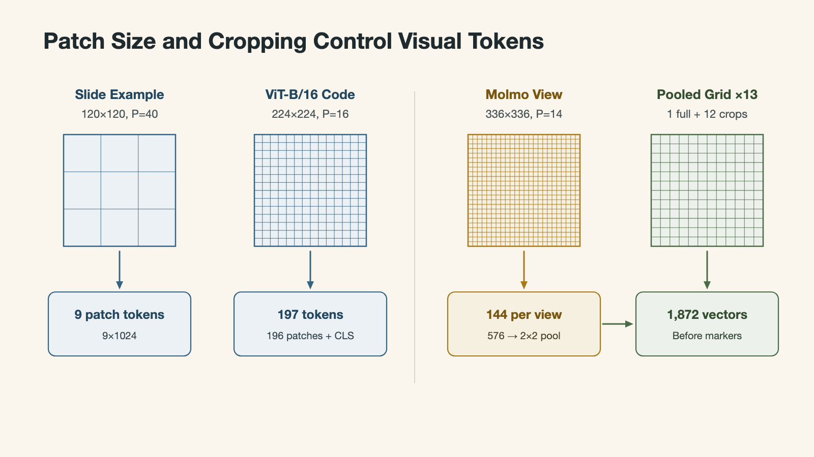

How Images Become Language-Model Tokens
CMU Advanced NLP · Lecture 11: Multimodal Modeling I
A text-only language model reads a prompt as a sequence of embedding vectors, one vector per token. Extending that model to read photographs, screenshots, web pages, or mathematical plots requires solving a representation bottleneck first: how to turn an image array \(x_{\text{image}} \in \mathbb{R}^{H \times W \times C}\) into a sequence of vectors \(z_1, \dots, z_L = f_{\text{enc}}(x_{\text{image}})\) that a transformer can process alongside words (slides, p. 8).
Sean Welleck’s Lecture 11 on the CMU Advanced NLP Fall 2025 schedule (slides PDF, code directory 11_multimodal_i) traces this progression across three building blocks:
- Vision Transformer (ViT) turns spatial pixel grids into patch token sequences using a standard transformer encoder (slides, pp. 9–17).
- CLIP aligns image and text representations in a shared normalized vector space using web-scale
(image, text)pairs rather than fixed class labels (slides, pp. 19–28). - LLaVA and Molmo project a pretrained CLIP ViT’s patch vectors into a language model’s embedding dimension, trading spatial resolution against token budget (slides, pp. 30–40).
![Three horizontal pipelines starting on the left from Image (H by W by C) and Caption y (Text pairs). Top blue row shows Patch + Project (N by D embeddings) to ViT Encoder (Transformer) to Class Logits (Supervised labels). Middle green row sends Image into Image Encoder f_I(x) and Caption y into Text Encoder f_T(y), feeding Cosine Matrix (B by B batch scores) and Symmetric InfoNCE (Mean row + col CE). Bottom ochre and terracotta row sends Image to CLIP ViT (Patch tokens) to Connector W (LLM dimension) to Language Model (Text loss only).](anlp11-assets/multimodal-pipeline.png)
Vision Transformers replace convolutions with patch tokens
Instead of sliding convolutional filters across pixels, a Vision Transformer splits an image \(x_{\text{image}} \in \mathbb{R}^{H \times W \times C}\) into \(N\) non-overlapping square patches of side \(P\) (Dosovitskiy et al. 2020; slides, pp. 9–10). Assuming \(P\) divides both height \(H\) and width \(W\):
\[ N = \frac{H W}{P^2}, \qquad X_p \in \mathbb{R}^{N \times (P^2 \cdot C)}. \]
Each flattened patch vector has dimension \(P^2 \cdot C\), and a single learned linear projection maps those \(N\) patch vectors into model dimension \(D\). Slide 10 states \(W_e \in \mathbb{R}^{D \times (P^2 \cdot C)}\) and writes \(x = W x_p\) symbolically; writing one flattened patch per row in \(X_p \in \mathbb{R}^{N \times (P^2 \cdot C)}\) and prepending one learnable [class] vector \(c \in \mathbb{R}^{1 \times D}\) (0* on slide 9) gives the full input sequence with learned position embeddings \(E_{\text{pos}} \in \mathbb{R}^{(N+1) \times D}\):
\[ X_{\text{in}} = \operatorname{concat}_{\text{rows}}\!\left(c,\, X_p W_e^\top\right) + E_{\text{pos}} \in \mathbb{R}^{(N+1) \times D}. \]
This sequence of \(N + 1\) vectors enters an \(L\)-layer Pre-LN transformer encoder (Norm -> Multi-Head Attention -> Residual followed by Norm -> MLP -> Residual), yielding contextualized vectors \(z_0, z_1, \dots, z_N\). For classification, an MLP head maps the [class] output \(z_0\) to label logits (slides, p. 11).
Two lecture-reported configurations illustrate how patch size governs sequence length:
- Slide worked calculation (slides, p. 10): A \(120 \times 120 \times 3\) image partitioned into \(40 \times 40\) patches yields \(N = \frac{120 \times 120}{40 \times 40} = 9\) patches, each of dimension \(40 \times 40 \times 3 = 4{,}800\). Projecting with \(W_e \in \mathbb{R}^{1024 \times 4800}\) gives \(9\) patch embeddings in \(\mathbb{R}^{9 \times 1024}\).
- Course ViT-B/16 code example (slides, p. 17): A \(224 \times 224 \times 3\) image (
torch.Size([1, 3, 224, 224])) with \(16 \times 16\) patches produces \(N = (224/16)^2 = 196\) patches; each flattened RGB patch has dimension \(16 \times 16 \times 3 = 768\), and the post-projection patch embedding tensor printed on the slide also has shapetorch.Size([1, 196, 768])because the model hidden size is \(768\). Passing those \(196\) patch embeddings plus \(1\) CLS token through \(12\) layers with \(12\) attention heads (head dimension \(768 / 12 = 64\)) outputstorch.Size([1, 197, 768])and a CLS representation oftorch.Size([1, 768]). On the slide’s two-cats image, the classifier predictsEgyptian cat(93.74%),tabby, tabby cat(3.84%),tiger cat(1.44%),lynx, catamount(0.33%), andSiamese cat, Siamese(0.07%).

Across pretraining experiments in Dosovitskiy et al. (2020), ViT exhibits four empirical patterns shown in the lecture (slides, pp. 12–16):
- Compute-dependent scaling (p. 12): At comparable plotted compute budgets, CNN-Transformer hybrids lead at lower pre-training compute (around \(10^2\) to \(3 \times 10^2\) exaFLOPs visually), while ViT and hybrid points sit close together at higher compute (around \(10^3\) exaFLOPs and above), and ViT stays above the plotted BiT ResNet points across budgets.
- Emergent 2D structure without 2D convolutions (pp. 13–14): Visualizing the first \(28\) principal components of \(W_e\) reveals oriented edge and color-opponent filters, and cosine similarities between 1D learned position embeddings recover a 2D row-and-column grid neighborhood across the \(7 \times 7\) patch array.
- Foreground saliency in classification (p. 15): In two visualization examples (a dog and an airplane), the model’s attention highlights the foreground object over the surrounding background.
- Per-head mean attention distance (p. 16): In the
ViT-L/16scatter plot of mean attention distance in pixels across depth, early layers (0–5) show heads spanning both low values (visually around \(10\text{–}20\) px) and high values (above \(100\) px), whereas deeper layers (>= 12) cluster at higher mean attention distances (visually around \(100\text{–}120\) px).
CLIP learns visual representations from text pairs
Training ViT on ImageNet still ties visual representations to a fixed set of hand-labeled categories. A single class name discards object attributes, relationships, scenes, and actions, and hand-labeling caps dataset scale (slides, p. 19).
CLIP (Radford et al. 2021; slides, pp. 20–24) replaces fixed-class supervision with contrastive learning over web-scale datasets such as \(400\text{ million}\) (image, text) pairs (slides, p. 21). Following the pseudocode on slide 24 with one sample per row, an image encoder \(f_I(x) \in \mathbb{R}^{1 \times d_i}\) and a text encoder \(f_T(y) \in \mathbb{R}^{1 \times d_t}\) are linearly projected via \(W_i \in \mathbb{R}^{d_i \times d_e}\) and \(W_t \in \mathbb{R}^{d_t \times d_e}\) into a shared embedding dimension \(d_e\) and \(L_2\)-normalized:
\[ \hat{z}_I(x) = \frac{f_I(x) W_i}{\|f_I(x) W_i\|_2} \in \mathbb{R}^{1 \times d_e}, \qquad \hat{z}_T(y) = \frac{f_T(y) W_t}{\|f_T(y) W_t\|_2} \in \mathbb{R}^{1 \times d_e}. \]
Given a minibatch of \(B\) aligned pairs \(\{(x_n, y_n)\}_{n=1}^B\), stacking the normalized row vectors into \(\hat{Z}_I, \hat{Z}_T \in \mathbb{R}^{B \times d_e}\) forms the \(B \times B\) pairwise logit matrix \(S = e^t \hat{Z}_I \hat{Z}_T^\top\) with scalar entries
\[ s_{n,m} = e^t\,\hat{z}_{I,n}\hat{z}_{T,m}^\top, \]
where \(e^t = 1/\tau > 0\) is the learned inverse temperature (np.exp(t) on slide 24). With mean reduction over the \(B\) examples in each axis, the symmetric contrastive loss averages image-to-text and text-to-image cross-entropy over the diagonal positives (slides, pp. 23–24):
\[ \mathcal{L}_{\text{CLIP}} = -\frac{1}{2B}\sum_{n=1}^{B} \left[ \log \frac{\exp(s_{n,n})}{\sum_{j=1}^{B}\exp(s_{j,n})} + \log \frac{\exp(s_{n,n})}{\sum_{j=1}^{B}\exp(s_{n,j})} \right]. \]
Two notation details on slide 23 are worth keeping straight when implementing from the deck: the slide omits the \(1/B\) batch-mean normalization and temperature scale in its display formula and writes \(p_\theta \propto f_I(x)^\top f_T(y)\) as shorthand, whereas the actual softmax distribution in both the loss fraction and the NumPy code on slide 24 is \(p_\theta(m \mid n) \propto \exp(s_{n,m})\) (with cross_entropy_loss reduction left implicit in the snippet; here we use mean reduction).
Constructed \(2 \times 2\) InfoNCE verification (not lecture data): Suppose \(B=2\) with \(e^t = 2\), matched cosine similarity \(0.8\), and mismatched cosine similarity \(0.2\). The logit matrix is \(S = \begin{pmatrix} 1.6 & 0.4 \\ 0.4 & 1.6 \end{pmatrix}\). Along either axis, the matched softmax probability is \(p_+ = \frac{e^{1.6}}{e^{1.6}+e^{0.4}} \approx 0.768525\), giving batch-mean symmetric cross-entropy \(-\log(0.768525) \approx 0.263282\) nats. Because each logit enters one row term and one column term with weight \(\frac{1}{2B} = \frac{1}{4}\), its gradient under the batch-mean symmetric loss is \(\frac{1}{2}(p_+ - 1) \approx -0.115738\) on the diagonal and \(\frac{1}{2}(1 - p_+) \approx +0.115738\) off the diagonal:
\[ \nabla_S \mathcal{L}_{\text{CLIP}} \approx \begin{pmatrix} -0.115738 & +0.115738 \\ +0.115738 & -0.115738 \end{pmatrix}, \]
pulling matched pairs together while pushing unmatched pairs apart.
Zero-shot classification turns prompts into classifier weights
At test time, CLIP classifies an image into any label set \(\{c_1, \dots, c_K\}\) without gradient updates by embedding prompt templates such as "A photo of a {object}." through the text branch once to obtain projected, normalized vectors \(\hat{z}_{T,1}, \dots, \hat{z}_{T,K}\), embedding the test image into \(\hat{z}_{I,1}\), and scoring \(e^t\,\hat{z}_{I,1}\hat{z}_{T,k}^\top\) (slides, p. 25). The temperature scale \(e^t\) leaves the argmax ranking unchanged while sharpening or flattening the resulting softmax probabilities.
In the lecture’s CLIP code output (slides, p. 28) on the same two-cats image, "a photo of a cat" scores raw logit 18.904 against "a photo of a dog" at 11.716. Applying a two-class softmax gives \(\frac{1}{1 + e^{-(18.904 - 11.716)}} \approx 99.9245\%\) (99.9% vs. 0.1% printed on the slide). Yet when 10 candidate prompts compete simultaneously on the right panel of slide 28, "cats on a couch" captures 89.08% and "two cats sitting together" captures 5.39%, dropping "a photo of a cat" to 0.33%—demonstrating that zero-shot probabilities depend directly on the competing prompt set.

Zero-shot CLIP also reveals a clear capability boundary in Radford et al. (2021):
- Selected gains across the 27-dataset evaluation (p. 26): Zero-shot CLIP beats a fully supervised ResNet-50 linear probe on 16 of 27 datasets, led by
StanfordCars(+28.9 pp),Country211(+23.2 pp),Food101(+22.5 pp),Kinetics700(+14.5 pp),SST2(+12.4 pp), andImageNet(+1.9 pp). - Spatial, counting, and domain-shift deficits (p. 26): Zero-shot CLIP trails the supervised linear probe sharply on satellite land cover (
EuroSAT -37.1 pp,RESISC45 -11.9 pp), depth estimation (KITTI Distance -34.0 pp), histopathology (PatchCamelyon -19.5 pp), traffic signs (GTSRB -18.4 pp), object counting (CLEVRCounts -18.2 pp), and handwritten digits (MNIST -10.0 pp). - Pre-training compute scaling (p. 27): Across model scales (
39evaluations on36datasets in Radford et al. 2021, Fig. 9), average zero-shot error drops smoothly with model GFLOPs—from a visual reading of roughly45%forRN50(6.1GFLOPs) to roughly30%forRN50x64(265.9GFLOPs).
LLaVA and Molmo turn visual patches into LLM inputs
CLIP produces a single pooled image vector for similarity scoring, whereas this family of vision-language models supports open-ended visual reasoning by feeding a sequence of spatial patch embeddings into an autoregressive language model.
LLaVA (Liu et al. 2023; slides, pp. 30–32) connects a pretrained CLIP ViT directly to a pretrained LLM \(f_\phi\). Using one token per row with \(W \in \mathbb{R}^{d_{\text{LLM}} \times d_v}\):
\[ Z_v = g(X_v) \in \mathbb{R}^{N \times d_v}, \qquad H_v = Z_v W^\top \in \mathbb{R}^{N \times d_{\text{LLM}}}, \]
where slide 32 takes \(Z_v\) from the last ViT layer and slide 30 diagrams the projection (\(H_v = W Z_v\) in Liu et al. 2023, Eq. 1). Following the ordering illustrated on slide 30, the LLM receives the concatenated sequence \([H_v; H_q]\) of projected image tokens \(H_v\) and text instruction embeddings \(H_q\), generating response tokens \(X_a\) autoregressively. During training on (image, instruction, response) data, cross-entropy loss skips the image positions (slides, p. 32) and supervises only the assistant answers and their stop tokens (Liu et al. 2023, §4.2 & Table 2).
| Stage | ViT (Classification) | CLIP (Contrastive) | LLaVA / Molmo (VLM) |
|---|---|---|---|
| Visual input | \(N\) patches + [class] |
One projected, normalized image vector | Sequence of patch vectors \(Z_v\) |
| Bridge to text | Fixed label head | Shared \(L_2\)-norm dot product | Linear projection \(W\) (LLaVA) or attention pooling + MLP (Molmo) |
| Supervision | Cross-entropy on class labels | Symmetric InfoNCE on \((x, y)\) pairs | Next-token loss on text only |
| Main failure mode | Closed label vocabulary | Prompt sensitivity; weak spatial counting | Fixed-res crops blur small text / details |
Molmo (Deitke et al. 2024; slides, pp. 33–40) addresses two bottlenecks in LLaVA-style models: resolution loss and human-grounded supervision.
First, compressing a high-resolution chart or document into a single 336 x 336 encoder frame blurs fine text. Molmo uses CLIP ViT-L/14 336px, where each 336 x 336 view splits into a \(24 \times 24\) grid of \(14 \times 14\) patches (\(576\) patches per view). Pooling each \(2 \times 2\) patch group before projection halves grid dimensions to \(12 \times 12 = 144\) visual vectors per view, interleaved with <im_col> row markers and <im_start>/<im_end> delimiters (slides, pp. 34–35). For the slide-35 configuration of 1 full image plus 12 crops, retaining all pooled positions gives \(13 \times 144 = 1{,}872\) visual vectors before special tokens (while Deitke et al. 2024 also note dropping overlap features before the connector, so actual LLM sequence length depends on crop handling and delimiters).
Second, Molmo builds its PixMo training suite across four branches (slides, p. 36):
- PixMo-Captions (pp. 36–37): Spoken voice descriptions are transcribed and rewritten by an LLM into detailed captions.
- PixMo-AskModelAnything (p. 36): Annotators write questions, an LLM drafts answers from the caption and OCR, and annotators review and suggest edits.
- PixMo-Points (pp. 33, 36, 38): Annotators click target points so the model learns to emit image-relative coordinates normalized to
0–100, such as<point x="63.5" y="44.5" alt="Mt Rainier">(p. 33) or a multi-point counting trace listing points throughx14, y14on the orchestra photo (p. 38). - PixMo-Synthetic (p. 36): Synthetic data generated from object-detector crops, dense captions, rendered watch faces (
8:26:12), and LLM-generated code plots.
Putting these pieces together makes multimodal answers inspectable. On slide 40, given a Pew Research bar chart and the question “What percentage of parents use Facebook?”, the lecture shows Molmo outputting <point x="66.6" y="24.2" alt="Percentage of parents using Facebook">74 percent</point>, anchoring the extracted number directly to the bar it read.